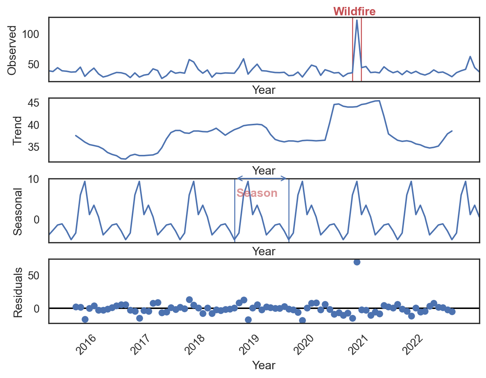
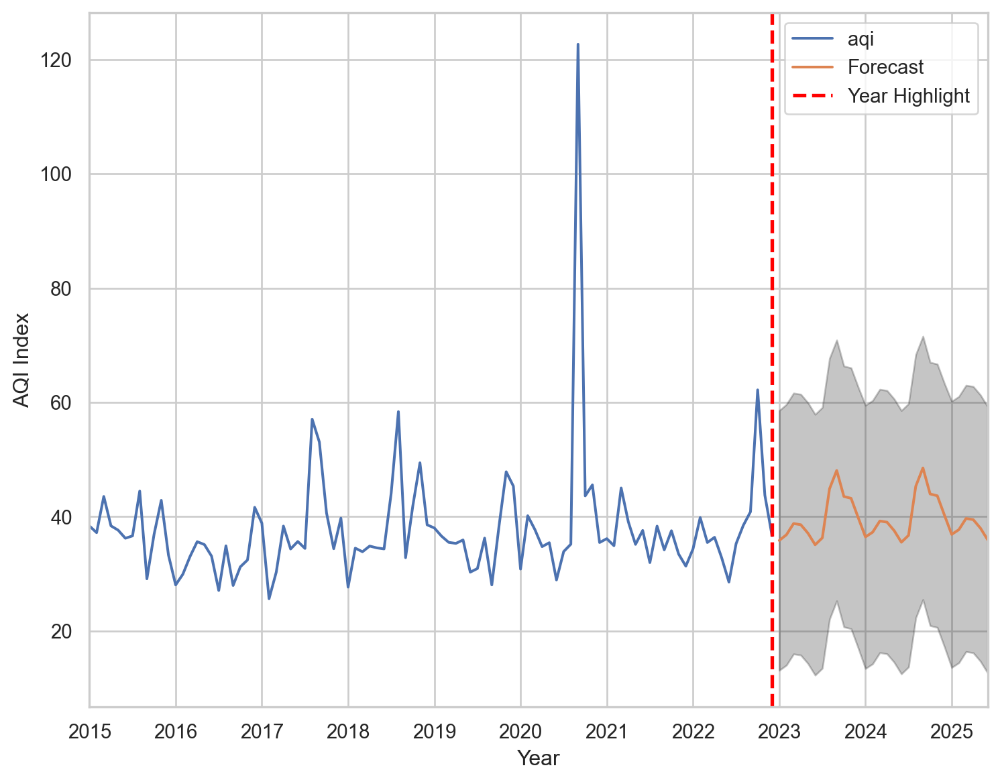

import statsmodels.api as sm
import matplotlib.pyplot as plt
import seaborn as sns
import numpy as np
import pandas as pdMachine Learning SARIMAX
A time series is a sequence of data points collected at regular intervals over a period of time. These intervals are typically uniform, such as hourly, daily, or quarterly measurements.
This orderly arrangement allows for the analysis of trends, patterns, and behaviors over time.
Common examples of time series data include stock market closing prices, household electricity consumption readings, and weather measurements.
In the context of our capstone project, we’re focusing on air quality index measurements as our time series data. This sequential record of air quality provides insights into pollution trends and can be used to forecast future air quality conditions.
import pandas as pd
df = pd.read_pickle('/data/df.pkl')sns.set_theme(style="darkgrid")
df_aqi = df[['date','aqi']]
df_aqi = df_aqi.set_index('date')
df_aqi = df_aqi.resample('ME').mean()
df_aqi.ffill(inplace=True)
#df_aqi.plot(figsize=(15,8))Any time series is composed of three things:
- Trend: Trend tells you how things are overall changing
- Seasonality: Seasonality shows you how things change within a given period (e.g. year,month, week, day)
- Residual: The Error/residual/irregular activity are the anomalies which cannot be explained by the trend or the seasonal value
Statsmodel
Using the statsmodel package, we can map the seasonal pattern and trends using seasonal_decompose method. It requires as inputs a dataframe with two columns date data and the AQI.
Components Of A Time Series
Time series decomposition is a statistical technique that separates data into three key components: trend, seasonality, and residuals.
The trend shows the long-term direction, seasonality reveals recurring patterns, and residuals represent unexplained variations.
Visualizing these components individually provides insights that may not be evident in the raw data. This process helps analysts identify underlying patterns, recognize cyclical behaviors, and detect anomalies. By understanding these elements separately, we can gain deeper insights into the factors driving the time series, leading to more accurate analysis and forecasting.
Decomposition is particularly useful when the complexity of a time series makes it challenging to discern important patterns from simple observation of the dataset.
import seaborn as sns
import statsmodels.api as sm
import matplotlib.pyplot as plt
import matplotlib.patches as patches
# Set the theme for seaborn
sns.set_theme(style="white")
# Perform seasonal decomposition
decomposition = sm.tsa.seasonal_decompose(df_aqi, model='additive')
# Plot the decomposition
fig = decomposition.plot()
# Set y-labels for each subplot
fig.axes[0].set_ylabel('Observed')
fig.axes[1].set_ylabel('Trend')
fig.axes[2].set_ylabel('Seasonal')
fig.axes[3].set_ylabel('Residuals')
# Add a box in the "Observed" plot for September 2020
ax_observed = fig.axes[0]
rect = patches.Rectangle((pd.Timestamp('2020-09-01'), ax_observed.get_ylim()[0]),
pd.Timestamp('2020-10-30') - pd.Timestamp('2020-09-01'),
ax_observed.get_ylim()[1] - ax_observed.get_ylim()[0],
linewidth=1, edgecolor='r', facecolor='none')
ax_observed.add_patch(rect)
# Add text "Wildfire" near the box
ax_observed.text(pd.Timestamp('2020-09-15'), ax_observed.get_ylim()[1], 'Wildfire',
verticalalignment='bottom', horizontalalignment='center',
color='r', fontsize=12, fontweight='bold')
# Add a box in the "Seasonal" plot from July 2018 to July 2019
ax_seasonal = fig.axes[2]
rect_seasonal = patches.Rectangle((pd.Timestamp('2018-07-01'), ax_seasonal.get_ylim()[0]),
pd.Timestamp('2019-07-01') - pd.Timestamp('2018-07-01'),
ax_seasonal.get_ylim()[1] - ax_seasonal.get_ylim()[0],
linewidth=1, edgecolor='b', facecolor='none')
ax_seasonal.add_patch(rect_seasonal)
# Add an arrow in the "Seasonal" plot
ax_seasonal.annotate('', xy=(pd.Timestamp('2018-07-01'), ax_seasonal.get_ylim()[1]),
xytext=(pd.Timestamp('2019-07-01'), ax_seasonal.get_ylim()[1]),
arrowprops=dict(arrowstyle='<->', color='b'))
# Add text "Seasonality Period" near the arrow
ax_seasonal.text(pd.Timestamp('2018-12-01'), ax_seasonal.get_ylim()[1] * 0.50, 'Season',
verticalalignment='bottom', horizontalalignment='center',
color='r', fontsize=12, fontweight='bold', alpha=0.6)
# Set x-labels with year and rotate them 45 degrees
for ax in fig.axes:
ax.set_xlabel('Year')
for label in ax.get_xticklabels():
label.set_rotation(45)
label.set_ha('right')
# Show the plot
plt.show()
Figure 14: Seasonal, Trend, and Residual Decomposition of Portland AQI Time Series
The uppermost graph, labeled Observed, presents the raw time series data as originally recorded. Its y-axis quantifies the daily air quality measurements, while the x-axis represents the passage of time.
This graph is a composite representation, effectively combining the three underlying components: trend, seasonality, and residuals.
A notable anomaly is evident in the data: a significant spike in air quality measurements occurring in September 2020. This outlier corresponds to the severe wildfires that ravaged Oregon during that period. The dramatic increase in air pollution levels during this time underscores the profound impact of extreme environmental events on air quality.
The Seasonal component graph illustrates the cyclical patterns in air quality that repeat annually. This visualization reveals a distinctive yearly pattern in Air Quality Index (AQI) fluctuations. The cycle begins with relatively low AQI values, indicating better air quality. As the year progresses, the AQI rises to a peak, signifying a period of poorer air quality. This is followed by an improvement (decrease in AQI), another deterioration (increase), and a final improvement towards the year’s end.
These recurring variations likely reflect the influence of seasonal factors such as changing weather patterns, temperature inversions, and seasonal human activities. For instance, winter months might see higher AQI due to increased heating emissions, while spring could bring lower AQI with more favorable dispersion conditions.
The graph includes a highlighted box that demarcates the seasonal period. This visual element clearly illustrates the duration and boundaries of one complete seasonal cycle in the air quality data. Understanding these seasonal trends is crucial for accurately interpreting air quality data and making informed predictions.
It allows environmental agencies and policymakers to anticipate periods of potentially compromised air quality and plan interventions accordingly.
Lastly, the final row displays the Residuals, which represent the portion of the data not explained by the trend or the seasonal component. We can interpret the residuals as the difference between the sum of the Trend and Seasonal components and the Observed values at each point in time.
Essentially, the Residuals indicate the amount that needs to be added to the Trend and Seasonal components to align the result with the Observed values. Residuals are typically attributed to random errors, often referred to as noise. These residuals embody the unpredictable elements of the data that cannot be captured or forecasted by the model, as they are inherently random.
Finding the Best Forecasting Model with Grid Search
For this project, we used an extended version of ARIMA model knows as SARIMAX model as we have explained in the methods section. We use a tuning technique called grid search method that attempts to compute the optimum values of hyperparameters. We are trying to find the right p,d,q values that would be given as an input to the SARIMAX time series model.
Here’s an easy-to-understand explanation of how this works:
Step 1: Setting Up Our Hyperparameters
We define p,d,q hyperparameters to take any value between 0 to 1 which help the model decide how much weight to give to past values, trends, and patterns.
We then create a list of all p,d,q possible combinations of these settings in a for loop.
Step 2: Trying Out Different Combinations
We go through each combination of settings to see how well each one works. For each main setting, we also try different seasonal settings to find the perfect combination.
Step 3: Checking the Results
For each set of p,d,q settings, we create a forecasting model and test it on our data. We measure how well each model works using a score called the Akaike Information Criterion (AIC) as mentioned in the methods section. This score tells us how well the model predicts the data, with lower scores being better.
If something goes wrong with a particular set of hyperparameter settings, we catch the error and move on to the next set without stopping the whole process.
import itertools
# Define the p, d, q parameters to take any value between 0 to 1
p = d = q = range(0, 2)
pdq = list(itertools.product(p, d, q)) # generate all possible combinations of p,d,q
# This creates combinations of seasonal parameters with a seasonality period of 12 (e.g., monthly data).
seasonal_pdq = [(x[0], x[1], x[2], 12) for x in pdq]
# Outer Loop: Iterates over all combinations of pdq.
# Inner Loop: Iterates over all combinations of seasonal_pdq.
# Try Block:
# Creates a SARIMAX model with the current combination of parameters.
# Fits the model to the data.
# Prints the AIC (Akaike Information Criterion) for the model, which is a measure of model quality.
# Except Block:
# Catches and prints any errors that occur during model fitting, allowing the loop to continue with the next set of parameters.
for param in pdq:
for param_seasonal in seasonal_pdq:
try:
mod = sm.tsa.statespace.SARIMAX(df_aqi,
order=param,
seasonal_order=param_seasonal,
enforce_stationarity=False,
enforce_invertibility=False)
results = mod.fit()
print('ARIMA{}x{} - AIC:{}'.format(param, param_seasonal, results.aic))
except Exception as e:
print(f"Error with parameters {param} and {param_seasonal}: {e}")
continueWe have found the lowest AIC values which would have the best corresponding p,d,q values to have the best forecast of AQI values.
SARIMAX Model Results
#mod = sm.tsa.statespace.SARIMAX(df_aqi,order=(1, 1, 1),seasonal_order=(0,1, 1, 12),enforce_stationarity=False,enforce_invertibility=False)
mod = sm.tsa.statespace.SARIMAX(df_aqi,order=(1, 1, 1),seasonal_order=(0,1, 1, 12))
results = mod.fit()
#print(results.summary().tables[0])
#print(results.summary().tables[1])
#print(results.summary().tables[2])C:\Users\Steve\AppData\Local\Programs\Python\Python312\Lib\site-packages\statsmodels\tsa\statespace\sarimax.py:1009: UserWarning:
Non-invertible starting seasonal moving average Using zeros as starting parameters.
| SARIMAX Results |
|---|
| Dep. Variable: aqi |
| Model: SARIMAX(1, 1, 1)x(0, 1, 1, 12) |
| Date: Thu, 15 Aug 2024 |
| Time: 12:09:16 |
| Sample: 01-31-2015 - 12-31-2022 |
| No. Observations: 96 |
| Log Likelihood: -330.316 |
| AIC: 668.632 |
| BIC: 678.307 (Bayesian Information Criterion) |
| HQIC: 672.519 (Hannan-Quinn Information Criterion) |
| Covariance Type: opg (Outer Product of Gradients) |
Interpretation
This summary presents a concise overview of the SARIMAX model’s performance and fit.
The SARIMAX(1, 1, 1)x(0, 1, 1, 12) model integrates both non-seasonal and seasonal components, effectively capturing both immediate and periodic influences on the Air Quality Index (AQI). The model utilizes 96 observations, providing a robust dataset for accurate model fitting.
Key metrics such as the log-likelihood, AIC, BIC, and HQIC are used to assess the model’s effectiveness, with lower values typically indicating a better fit that balances complexity and accuracy.
The summary also includes the date and time of model execution, the timeframe of the data, and the type of covariance used, which aids in understanding how the model accounts for uncertainties in parameter estimates.
Next, we extract the coefficient, standard errors, z-values, p-values, and 95% confidence intervals for the SARIMAX model parameters. This information is crucial for evaluating the significance and reliability of each parameter estimate
Autoregressive Term (ar.L1)
- Coefficient: 0.0483 Suggests a slight positive influence of the previous observation on the current value.
- Standard Error: 0.306 Indicates significant variability in the coefficient estimate.
- Z-Value: 0.158 Low value, indicating the coefficient is not statistically significant.
- P-Value: 0.875 Not significant (p-value > 0.05).
- Confidence Interval: [-0.551, 0.648]
- Includes zero, reinforcing the lack of significance.
Moving Average Term (ma.L1)
- Coefficient: -1.0000 Implies the model tries to correct nearly all errors from the previous period.
- Standard Error: 924.523 Extremely large, pointing to high uncertainty in the estimate.
- Z-Value: -0.001 Near zero, indicating no statistical significance.
- P-Value: 0.999 Not significant.
- Confidence Interval: [-1813.031, 1811.031] Very wide and includes zero, confirming lack of significance.
Seasonal Moving Average Term (ma.S.L12)
- Coefficient: -1.0000 Attempts to correct errors regarding data seasonality.
- Standard Error: 2355.498 Very large, indicating substantial uncertainty.
- Z-Value: -0.000 Near zero, suggesting no significance.
- P-Value: 1.000 Not significant.
- Confidence Interval: [-4617.692, 4615.692] Wide interval, includes zero, further indicating no significance.
Variance of the Residuals (sigma2)
- Coefficient: 134.1503 Represents the variance of the residuals or errors.
- Standard Error: 335000 Extremely high, showing great uncertainty.
- Z-Value: 0.000 Indicates no statistical significance.
- P-Value: 1.000 Not significant.
- Confidence Interval: [-657000, 657000] Very wide, includes zero, highlighting lack of significance.
Fit SARIMAX model
aic_value = results.aic
print(f"The AIC value is: {aic_value}")The AIC value is: 668.6317406918595When working with SARIMAX models, there are typically several plots you might analyze, such as:
- Time Series Plot of Residuals: Shows the residuals over time. Ideally, residuals should appear as random noise without clear patterns.
- ACF and PACF Plots of Residuals: Autocorrelation Function (ACF) and Partial Autocorrelation Function (PACF) plots help identify if the residuals of the model are uncorrelated. For a well-fitting model, residual autocorrelations should be small and within the significance bounds.
- Q-Q Plot: This plot compares the distribution of residuals to a normal distribution. Points should ideally lie along the line of best fit.
- Forecast Plot: Displays the fitted values versus the actual values and includes forecasted values. A good model will have fitted values close to the actual values with narrow confidence intervals
results.plot_diagnostics(figsize=(10,10))
Once the model is created, predicted values are generated using the .get_prediction() method, with datetime as input.
pred = results.get_prediction(start=pd.to_datetime('2023-01-01 00:00:00'), dynamic=False)
pred_ci = pred.conf_int()ax = df_aqi['2015-01-31 00:00:00':].plot(label='Observed') # plot the observed data
pred.predicted_mean.plot(ax=ax, label='One-step ahead Forecast', alpha=.7, figsize=(14, 7))
ax.fill_between(pred_ci.index,pred_ci.iloc[:, 0],pred_ci.iloc[:, 1], color='k', alpha=.2)
ax.set_xlabel('Date')
ax.set_ylabel('AQI index')
plt.legend()
plt.show()To facilitate comparison of true and predicted test values, we will create a separate DataFrame. Mean Error Estimation will be used for analysis.
y_forecasted = pred.predicted_mean
y_truth = df_aqi['2022-12-31 00:00:00':]To evaluate model performance, we calculate the MSE.
import numpy as np
from sklearn.metrics import mean_squared_error
mse = np.sqrt(mean_squared_error(y_truth, y_forecasted))
print('The Mean Squared Error of our forecasts is {}'.format(round(mse, 2)))The Mean Squared Error of our forecasts is 0.83In the context of predicting the Air Quality Index (AQI), the Mean Squared Error (MSE) is indeed an indicator of the average squared difference between the predicted AQI values and the actual AQI values.
Forecasting Future Values
As we conclude our modeling process, we generate predictions for the next 30 data points:
Model Information: The
resultvariable contains our fitted model’s details.Forecasting Method: We use the
.get_forecast()method on our model results.Prediction Generation: This method analyzes observed patterns in our data to project future values.
Output: We obtain forecasts for the next 30 time points, representing predicted air quality levels.
This step transforms our analytical work into actionable insights for air quality management.
pred_uc = results.get_forecast(steps=30)
pred_ci = pred_uc.conf_int()# Get the forecasted values
forecasted_values = pred_uc.predicted_mean
# Get the forecasted dates
forecasted_dates = forecasted_values.index
# Create a DataFrame with the dates and forecasted values
forecast_df = pd.DataFrame({
'Date': forecasted_dates,
'Forecasted Value': forecasted_values
})
# Print the DataFrame as a table
#print(forecast_df.head(30).to_markdown(index=False))Visualizing Our Results
The final and crucial step of our project is the creation of a comprehensive plot that encapsulates our complex analysis. This visualization serves as the key to understanding and interpreting our findings.
Interpreting the Forecast Plot
Our plot consists of several key elements:
- Observed Values (Blue Line)
- Represents the actual, historical air quality measurements
- Provides a baseline for comparing our predictions
- Forecasted Values (Orange Line)
- Depicts the future air quality levels predicted by our SARIMAX Time Series Model
- Allows us to visualize potential trends and patterns in air quality
- Confidence Interval (Shaded Region)
- The shaded area around the forecast line represents the 95% Confidence Interval (CI)
- Indicates the range within which we can be 95% confident that the true future values will fall
- Wider intervals suggest greater uncertainty in the prediction
This visual representation not only summarizes our extensive data analysis but also provides a powerful tool for understanding potential future air quality trends. It bridges the gap between complex statistical models and actionable insights, making our findings accessible and meaningful to a broader audience.
# Set the seaborn theme
sns.set_theme(style="whitegrid")
ax = df_aqi.plot(label='Observed', figsize=(9, 7))
pred_uc.predicted_mean.plot(ax=ax, label='Forecast')
ax.fill_between(pred_ci.index,pred_ci.iloc[:, 0],pred_ci.iloc[:, 1], color='k', alpha=.25)
# Add the vertical line for a specific year
year_to_highlight = '2022-12-31' # Example date to highlight
ax.axvline(pd.to_datetime(year_to_highlight), color='red', linestyle='--', linewidth=2, label='Year Highlight')
# Set labels and legend
ax.set_xlabel('Year')
ax.set_ylabel('AQI Index')
plt.legend()
plt.show()
Figure 16: Portland AQI Plot Forecast from 2023 to 2025
Overall Conclusion
None of the coefficients in the SARIMAX model are statistically significant, as indicated by the high p-values and z-values close to zero. This means that the parameters do not effectively predict the AQI data. The large standard errors and wide confidence intervals point to a high degree of uncertainty in the parameter estimates. This suggests the model may not be well-suited for capturing the dynamics of the AQI data, and re-evaluation of the model or data is recommended. Our conclusion is that the SARIMAX model did not predict well the forecast values of the air quality index (AQI).
Possible Reasons for Poor Performance
Model Mis-specification: The chosen order of the SARIMAX model, including the autoregressive, differencing, and moving average components, may not be suitable for capturing the dynamics of the AQI data. This can lead to the model failing to capture trends and seasonal patterns accurately.
Overfitting or Underfitting: A high p-value for the model coefficients suggests that these parameters are not statistically significant. This could be a sign of overfitting, where the model is too complex and captures noise instead of the underlying pattern, or underfitting, where the model is too simple to capture the complexity of the data.
Residual Diagnostics: The residuals from the SARIMAX model may not be normally distributed or might exhibit autocorrelation, as seen in the plot diagnostics. This violation of assumptions indicates that the model is not capturing all the patterns in the data.
External Influences: The SARIMAX model may not account for all external factors influencing AQI, such as sudden changes in weather conditions, wildfires, or policy changes affecting pollution levels.
SARIMAX model: The SARIMAX model is quite intricate and can be challenging to comprehend fully.